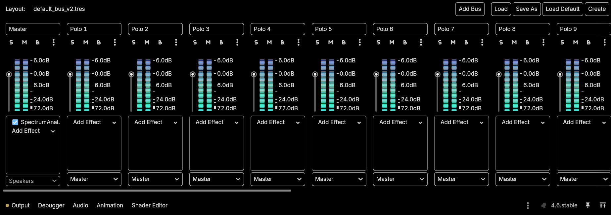
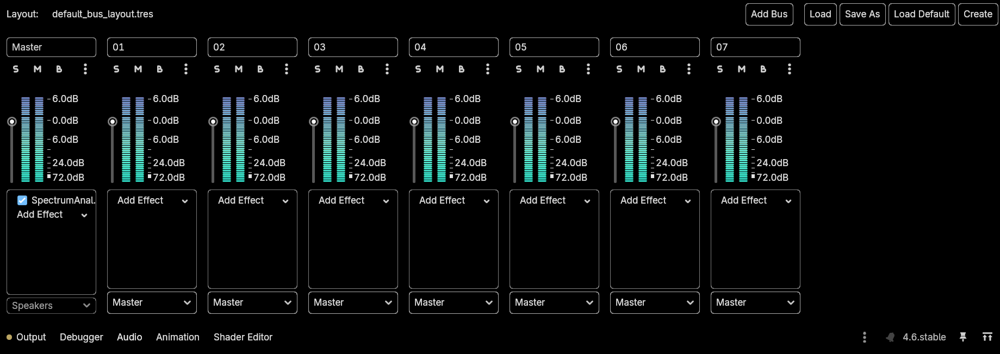

Since update v1.0-451d58d the way of adding effects has been changed in favor of something more modular. This guide will teach you how to add effects for both the V2 bus layout and the Legacy (and now deprecated) bus layout.
Before continuing with this guide, it's best to first explain what buses are. An audio bus is basically something like an audio track in a DAW. Being able to play only one track at a time is lame. That's why we have multiple audio buses. We might want a track for drums, another for the melody, and another for the voice. And they all have to play at the same time. Godot accomplishes this with buses. The Master bus is the one responsible for merging the audio of other buses together and playing it through the speakers. The rest of the buses send different audios to the Master bus in order for the audio to be played.

By default, the V2 layout will be enabled unless specified otherwise in the configuration. The layout is fairly easy to understand. There are 21 different buses. Each of the buses corresponds to a different polo. They're labeled so that you know the configuration order. The Polo 1 bus plays the audio of the first beat. Polo 2 plays the audio of the second beat, and so on. To add an effect, simply press on the dropdown menu that says Add Effect. All you have to do is select the effect you want polo number X to have. For example, you might want to add reverb to it.
Once you select the effect, you will see something like in Master. The Effect will have a checkmark. To enable/disable the effect, simply click on that checkmark. To configure the effect, click on the effect you want to configure. The right panel will have changed to display the configuration of the effect. You will not be able to dynamically change the effect configuration (through the editor) while the game is running. This means you will need to configure and test run the project a few times to get it right.
If you have more than 20 polos in your mod, add as many buses as extra polos.
To remove an added effect, right click the effect and click Remove. That'll remove the effect from the bus.
It is highly recommended that you don't touch the Master bus and its effects unless you know what you're doing. If you want to disable background reactivity, just set the brightness sensitivity variable at the Main scene to 0.

The legacy bus layout is composed of 8 buses. One for each of the seven playing polos and Master. Since there are more polos than buses, the method of adding an effect is through code. You will need to modify the AudioPlayer.gd script to add your custom effect. There is a document explaining how to add effects here. The Legacy layout is very limited to what it can do and the effects it can hold. That's why it's been deprecated in favor of a much easier solution that allows for much more. It will not receive any support and will eventually be removed from the code in later versions of RhythmPrism.